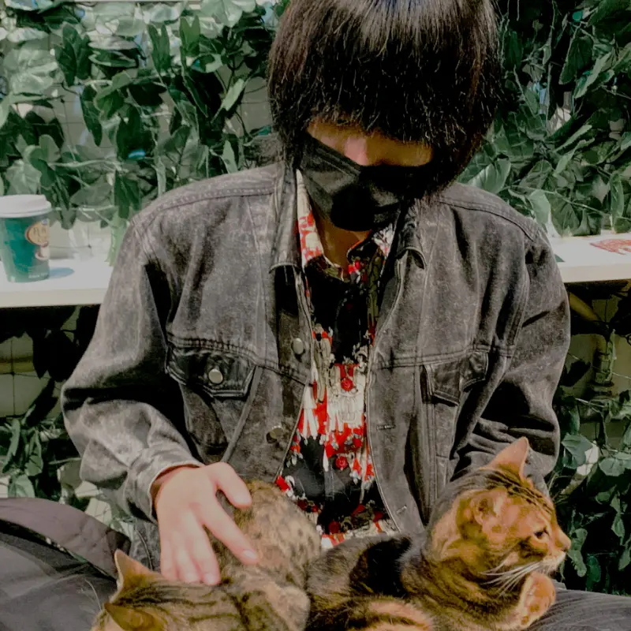

Create designs
that Colors are
consistent.
Purpose
この世界は数えきれない程の色で出来ています。
赤や青といった色彩、無数に存在する個性。
私は後者の個性をありのままの魅力と捉えています。
個性を軸としたデザインはより魅力が伝わるものになる、
そのように考えています。
人々や製品、サービスの魅力をより伝えられるように
彼らの個性を最後まで一貫させたものづくりをする。
この目標から一貫性や調和といった意味をもつ、
「Consistency」という言葉をサイト名にしています。
Works

Me
竹村 陽之介/Akinosuke Takemura

京都コンピュータ学院鴨川校 アート・デザイン基礎科
デザインとWeb制作について学んでいる学生です。
デザインも出来るフロントエンドエンジニアを目指しています。